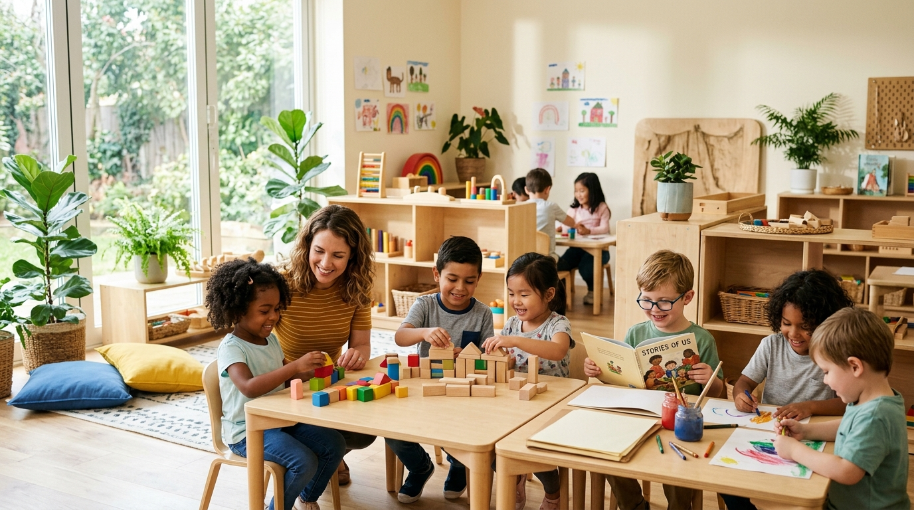

Playgroup
Gentle first-school transition focused on sensory exploration, songs, sharing, and joyful motor development.
Explore Playgroup →At Shining Stars Pre School & Academy, we blend joyful early-years Montessori discovery with a strong, inquiry-led Primary Academy so every child builds confidence, kindness, and academic readiness.

Thoughtfully paced stages that respect how young children grow, wonder, and master new skills.
Gentle first-school transition focused on sensory exploration, songs, sharing, and joyful motor development.
Explore Playgroup →Hands-on Montessori trays, phonics foundations, storytelling circles, and early number sense through play.
Explore Nursery →Confident early reading, expressive writing, math manipulatives, nature discovery, and creative studio time.
Explore Kindergarten →Grades 1–5 academic excellence combining conceptual math, literature, inquiry science, robotics, and sports.
Explore Grades 1–5 →Switch between our Preschool Wing and Primary Academy to see how your child’s day comes alive.

Our sunlit preschool classrooms are thoughtfully arranged at child height with tactile Montessori materials, cozy reading corners, and sensory stations that spark independence and curiosity.

In our Primary Academy, students transition smoothly into structured inquiry—asking bold questions, conducting science experiments, writing expressive stories, and collaborating on STEM builds.
Every detail of our campus—from classroom lighting to teacher ratios—supports happy, thriving students.
Warm, Montessori- and Primary-trained educators who know every child’s strengths and learning pace.
ID-verified reception, CCTV-monitored gates, child-safe furnishings, and pediatric first-aid certified staff.
Dedicated science discovery lab, library reading nook, music room, and art studio for holistic growth.
Weekly classroom photo updates, term progress portfolios, and open-door teacher conversations.

When we founded Shining Stars Pre School & Academy, our dream was simple: build a school where preschoolers run happily through the door each morning, and primary students graduate into Grade 6 confident, articulate, and deeply curious.
We invite your family to walk our classrooms, meet our teachers, and feel the warmth of our learning community firsthand.
— Mrs. Nadia Rahman, M.Ed.
Founder & Principal, Shining Stars Pre School & Academy
“My daughter started in Playgroup feeling shy, and now in Kindergarten she reads bedtime stories aloud with so much pride. The teachers truly know and cherish her.”
“The jump from Preschool into Primary Academy Grade 1 was effortless. The robotics lab, small class size, and warm communication keep us completely reassured.”